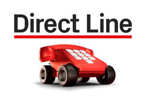
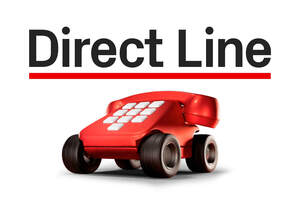

Trade Mark Journal No.2025/030 25 July 2025
UK00004233502 14 July 2025 (9,16,35,36,37,38,39,42,45)
Mark 1
Mark 2
Mark 3

Mark 4

- Class 9
- Computer software, software application (app) enabling content, text and other data to be downloaded to and accessed on a computer or other portable consumer electronic device data processing equipment and publications in electronic form all relating to motors, motoring, tyre pressure, brake wear and tear, vehicle efficiency and economy, route planning, route mileage, fuel consumption, vehicle insurance, vehicle financing, vehicle servicing, maintenance of vehicles, vehicle administration, road tolls, road tax, driving city charges, parking and vehicle fuelling; software application (app) enabling content, text and other data to be downloaded to and accessed on a computer or other portable consumer electronic device relating to motors, motoring, tyre pressure, brake wear and tear, vehicle efficiency and economy, route planning, route mileage, fuel consumption, vehicle insurance, vehicle financing, vehicle servicing, maintenance of vehicles, vehicle administration, road tolls, road tax, driving city charges, parking and vehicle fuelling; ; data processing equipment relating to motors, motoring, route planning, route mileage, fuel consumption, tyre pressure, brake wear and tear, vehicle efficiency and economy, vehicle insurance, vehicle financing, vehicle servicing, maintenance of vehicles, vehicle administration, road tolls, road tax, driving city charges, parking and vehicle fuelling; electronic publications relating to motors, motoring, route planning, route mileage, fuel consumption, tyre pressure, brake wear and tear, vehicle efficiency and economy, vehicle insurance, vehicle financing, vehicle servicing, maintenance of vehicles, vehicle administration, road tolls, road tax, driving city charges, parking and vehicle fuelling; publications in electronic form supplied from a database relating to motors, motoring, route planning, route mileage, fuel consumption, tyre pressure, brake wear and tear, vehicle efficiency and economy, vehicle insurance, vehicle financing, vehicle servicing, maintenance of vehicles, vehicle administration, road tolls, road tax, driving city charges, parking and vehicle fuelling; publications in electronic form supplied over the Internet relating to motors, motoring, route planning, route mileage, fuel consumption, tyre pressure, brake wear and tear, vehicle efficiency and economy, vehicle insurance, vehicle financing, vehicle servicing, maintenance of vehicles, vehicle administration, road tolls, road tax, driving city charges, parking and vehicle fuelling; electric and electronic apparatus for use with debit, credit and charge cards relating to motors, motoring, route planning, route mileage, fuel consumption, tyre pressure, brake wear and tear, vehicle efficiency and economy, vehicle insurance, vehicle financing, vehicle servicing, maintenance of vehicles, vehicle administration, road tolls, road tax, driving city charges, parking and vehicle fuelling; apparatus for receiving and providing information about traffic and travel conditions; telematics devices for insurance evaluation and insurance services; telematics apparatus for the provision of monitoring and alerting services in relation to motor insurance; equipment and instruments for use in monitoring and recording data and information concerning driver and vehicle performance, maintenance and servicing of vehicles, tyre pressure, brake wear and tear, vehicle efficiency and economy, route planning, route mileage, fuel consumption, vehicle administration, road tolls, road tax, driving city charges, parking and vehicle fuelling; vehicle diagnostic apparatus and software; motor engine diagnostic apparatus and software; electronic data recording and retrieval devices for use in vehicles; electronic data recording and retrieval devices for use in vehicles relating to fuel consumption, tyre pressure, brake wear and tear, vehicle efficiency and economy, servicing and maintenance.
- Class 16
- Printed matter; printed publications; books; maps; guides, handbooks; catalogues; indexes; manuals; magazines; newsletters; periodicals; stationery; paper; stickers (stationery) all of the aforementioned relating to motors, motoring, tyre pressure, brake wear and tear, vehicle efficiency and economy, route planning, route mileage, fuel consumption, vehicle insurance, vehicle financing, vehicle servicing, maintenance of vehicles, vehicle administration, road tolls, road tax, driving city charges, parking and vehicle fuelling.
- Class 35
- Commercial information services provided to consumers by access to a computer database relating to motors, motoring, tyre pressure, brake wear and tear, vehicle efficiency and economy, route planning, route mileage, fuel consumption, vehicle insurance, vehicle financing, vehicle servicing, maintenance of vehicles, vehicle administration, road tolls, road tax, driving city charges, parking and vehicle fuelling; business consultancy and advisory services relating to motors, motoring, tyre pressure, brake wear and tear, vehicle efficiency and economy, route planning, route mileage, fuel consumption, vehicle insurance, vehicle financing, vehicle servicing, maintenance of vehicles, vehicle administration, road tolls, road tax, driving city charges, parking and vehicle fuelling; collection and dissemination of statistical, quantitative and qualitative information relating to motoring; vehicle purchase, maintenance and repair cost price analysis; database and information systems management services relating to motors, motoring, tyre pressure, brake wear and tear, vehicle efficiency and economy, route planning, route mileage, fuel consumption, vehicle insurance, vehicle financing, vehicle servicing, maintenance of vehicles, vehicle administration, road tolls, road tax, driving city charges, parking and vehicle fuelling; database aggregation, integration and management services relating to motors, motoring, tyre pressure, brake wear and tear, vehicle efficiency and economy, route planning, route mileage, fuel consumption, vehicle insurance, vehicle financing, vehicle servicing, maintenance of vehicles, vehicle administration, road tolls, road tax, driving city charges, parking and vehicle fuelling; data processing services relating to motors, motoring, tyre pressure, brake wear and tear, vehicle efficiency and economy, route planning, route mileage, fuel consumption, vehicle insurance, vehicle financing, vehicle servicing, maintenance of vehicles, vehicle administration, road tolls, road tax, driving city charges, parking and vehicle fuelling; searching and retrieving information, sites, and resources located on computer networks for others relating to motors, motoring, tyre pressure, brake wear and tear, vehicle efficiency and economy, route planning, route mileage, fuel consumption, vehicle insurance, vehicle financing, vehicle servicing, maintenance of vehicles, vehicle administration, road tolls, road tax, driving city charges, parking and vehicle fuelling; compilation of a stock location database provided online to assist customers in locating vehicle parts for sale; compilation of computer databases relating to motors, motoring, tyre pressure, brake wear and tear, vehicle efficiency and economy, route planning, route mileage, fuel consumption, vehicle insurance, vehicle financing, vehicle servicing, maintenance of vehicles, vehicle administration, road tolls, road tax, driving city charges, parking and vehicle fuelling; advisory services relating to the purchase of new vehicles and consumer goods; telematics subscription services; advertising services relating to motor vehicles and motoring; subscription to telecommunications database services relating to motors, motoring, tyre pressure, brake wear and tear, vehicle efficiency and economy, route planning, route mileage, fuel consumption, vehicle insurance, vehicle financing, vehicle servicing, maintenance of vehicles, vehicle administration, road tolls, road tax, driving city charges, parking and vehicle fuelling; business management of car parking facilities; the bringing together, for the benefit of others, of a variety of insurance and financial services, enabling consumers to conveniently compare and purchase those services; the bringing together, for the benefit of others, of a variety of goods, namely computer software, computer application software and computer programs relating to motors, motoring, tyre pressure, brake wear and tear, vehicle efficiency and economy, route planning, route mileage, fuel consumption, vehicle insurance, vehicle financing, vehicle servicing, maintenance of vehicles, vehicle administration, road tolls, road tax, driving city charges, parking and vehicle fuelling, cartographic apparatus, publications relating to motors, motoring, route planning, route mileage, fuel consumption, tyre pressure, brake wear and tear, vehicle efficiency and economy, vehicle insurance, vehicle financing, vehicle servicing, maintenance of vehicles, vehicle administration, road tolls, road tax, driving city charges, parking and vehicle fuelling, apparatus for receiving and providing information about traffic and travel conditions, telematics devices for insurance evaluation and insurance services, telematics apparatus for the provision of monitoring and alerting services in relation to motor insurance, equipment and instruments for use in monitoring and recording data and information concerning driver and vehicle performance, maintenance and servicing of vehicles, tyre pressure, brake wear and tear, vehicle efficiency and economy, route planning, route mileage, fuel consumption, vehicle administration, road tolls, road tax, driving city charges, parking and vehicle fuelling, vehicle diagnostic apparatus and software, motor engine diagnostic apparatus and software, communications equipment, electronic data recording and retrieval devices for use in vehicles, enabling customers to enabling consumers to conveniently compare and purchase those services; information, advisory and consultancy services all relating to the above services.
- Class 36
- Insurance; financial services; pension services; actuarial services; insurance underwriting; brokerage services; insurance brokerage; reinsurance services; credit card services; mortgage services; loan services; warranty services; home, life, landlord, buildings, contents, vehicle, travel, indemnity, legal, pet and equine insurance; insurance claims administration; legal expenses insurance; financial leasing (hire purchase); credit card and debit card services; financial guarantee services for the reimbursement of expenses incurred as a result of vehicle breakdown or vehicle accident; information, advisory and consultancy services all relating to the above services.
- Class 37
- Motor repair services; vehicle repair services; inspection, repair, maintenance, cleaning and painting of motor vehicles and their parts; installation services for vehicle parts; tyre, exhaust and windscreen fitting services; repair, installation and maintenance services, all for domestic and household services and for domestic and household apparatus, equipment and installation; arranging the provision of all the aforesaid services; information, advisory and consultancy services all relating to the above services.
- Class 38
- Telecommunication services including the provision of call centre services, communications by electronic mail, communications by the Internet, communications by telephone relating to motors, motoring, tyre pressure, brake wear and tear, vehicle efficiency and economy, route planning, route mileage, fuel consumption, vehicle insurance, vehicle financing, vehicle servicing, maintenance of vehicles, vehicle administration, road tolls, road tax, driving city charges, parking and vehicle fuelling; data transmission services over telematics networks; telematics communication services; messaging services relating to motors, motoring, tyre pressure, brake wear and tear, vehicle efficiency and economy, route planning, route mileage, fuel consumption, vehicle insurance, vehicle financing, vehicle servicing, maintenance of vehicles, vehicle administration, road tolls, road tax, driving city charges, parking and vehicle fuelling; delivery of internet links via telephone or mobile phone relating to motors, motoring, tyre pressure, brake wear and tear, vehicle efficiency and economy, route planning, route mileage, fuel consumption, vehicle insurance, vehicle financing, vehicle servicing, maintenance of vehicles, vehicle administration, road tolls, road tax, driving city charges, parking and vehicle fuelling; delivery of information via telephone or mobile phone relating to motors, motoring, tyre pressure, brake wear and tear, vehicle efficiency and economy, route planning, route mileage, fuel consumption, vehicle insurance, vehicle financing, vehicle servicing, maintenance of vehicles, vehicle administration, road tolls, road tax, driving city charges, parking and vehicle fuelling; delivery of audio/visual content via telephone or mobile phone relating to motors, motoring, tyre pressure, brake wear and tear, vehicle efficiency and economy, route planning, route mileage, fuel consumption, vehicle insurance, vehicle financing, vehicle servicing, maintenance of vehicles, vehicle administration, road tolls, road tax, driving city charges, parking and vehicle fuelling; transmission to consumers of internet links to information, sales offers and/or competitions relating to motors, motoring, tyre pressure, brake wear and tear, vehicle efficiency and economy, route planning, route mileage, fuel consumption, vehicle insurance, vehicle financing, vehicle servicing, maintenance of vehicles, vehicle administration, road tolls, road tax, driving city charges, parking and vehicle fuelling; transferring and disseminating information and data via computer networks and the Internet relating to motors, motoring, tyre pressure, brake wear and tear, vehicle efficiency and economy, route planning, route mileage, fuel consumption, vehicle insurance, vehicle financing, vehicle servicing, maintenance of vehicles, vehicle administration, road tolls, road tax, driving city charges, parking and vehicle fuelling; transmission of digital files relating to motors, motoring, tyre pressure, brake wear and tear, vehicle efficiency and economy, route planning, route mileage, fuel consumption, vehicle insurance, vehicle financing, vehicle servicing, maintenance of vehicles, vehicle administration, road tolls, road tax, driving city charges, parking and vehicle fuelling; providing online chat rooms and electronic bulletin boards for transmission of messages among users relating to motors, motoring, tyre pressure, brake wear and tear, vehicle efficiency and economy, route planning, route mileage, fuel consumption, vehicle insurance, vehicle financing, vehicle servicing, maintenance of vehicles, vehicle administration, road tolls, road tax, driving city charges, parking and vehicle fuelling; providing online forums for the transmission of messages, comments, information and content among users relating to motors, motoring, tyre pressure, brake wear and tear, vehicle efficiency and economy, route planning, route mileage, fuel consumption, vehicle insurance, vehicle financing, vehicle servicing, maintenance of vehicles, vehicle administration, road tolls, road tax, driving city charges, parking and vehicle fuelling; transmission of messages, data and content via the Internet and other communications networks relating to motors, motoring, tyre pressure, brake wear and tear, vehicle efficiency and economy, route planning, route mileage, fuel consumption, vehicle insurance, vehicle financing, vehicle servicing, maintenance of vehicles, vehicle administration, road tolls, road tax, driving city charges, parking and vehicle fuelling; transmission of electronic media, multimedia content, videos, movies, pictures, images, text, photos, user-generated content, audio content, and information via the Internet and other communications networks relating to motors, motoring, tyre pressure, brake wear and tear, vehicle efficiency and economy, route planning, route mileage, fuel consumption, vehicle insurance, vehicle financing, vehicle servicing, maintenance of vehicles, vehicle administration, road tolls, road tax, driving city charges, parking and vehicle fuelling; multimedia communications services provided online and through computer networks relating to motors, motoring, route planning, route mileage, fuel consumption, vehicle insurance, vehicle financing, vehicle servicing, maintenance of vehicles, vehicle administration, road tolls, road tax, driving city charges, parking and vehicle fuelling; communications services for accessing a database relating to motors, motoring, tyre pressure, brake wear and tear, vehicle efficiency and economy, route planning, route mileage, fuel consumption, vehicle insurance, vehicle financing, vehicle servicing, maintenance of vehicles, vehicle administration, road tolls, road tax, driving city charges, parking and vehicle fuelling; provision of access to electronic communication networks and the Internet relating to motors, motoring, tyre pressure, brake wear and tear, vehicle efficiency and economy, route planning, route mileage, fuel consumption, vehicle insurance, vehicle financing, vehicle servicing, maintenance of vehicles, vehicle administration, road tolls, road tax, driving city charges, parking and vehicle fuelling; information, advisory and consultancy services all relating to the above services.
- Class 39
- Route planning services; travel arrangement services; vehicle recovery services; vehicle towing services; delivery and storage of spare parts for motor vehicles; transport services; leasing of motor vehicles; rental of motor vehicles; services for the provision of information relating to travel routes, traffic and road conditions and motor and rail transport; services for arranging the transportation (including the re-patriation from overseas countries) of unwell travellers and their vehicles and their luggage; rescue services for travellers; information, advisory and consultancy services all relating to the above services.
- Class 42
- Design and development of computer software relating to motors, motoring, tyre pressure, brake wear and tear, vehicle efficiency and economy, route planning, route mileage, fuel consumption, vehicle insurance, vehicle financing, vehicle servicing, maintenance of vehicles, vehicle administration, road tolls, road tax, driving city charges, parking and vehicle fuelling; computer programming design services relating to motors, motoring, tyre pressure, brake wear and tear, vehicle efficiency and economy, route planning, route mileage, fuel consumption, vehicle insurance, vehicle financing, vehicle servicing, maintenance of vehicles, vehicle administration, road tolls, road tax, driving city charges, parking and vehicle fuelling; computer database services relating to motors, motoring, tyre pressure, brake wear and tear, vehicle efficiency and economy, route planning, route mileage, fuel consumption, vehicle insurance, vehicle financing, vehicle servicing, maintenance of vehicles, vehicle administration, road tolls, road tax, driving city charges, parking and vehicle fuelling; installation, maintenance and repair of computer software relating to motors, motoring, tyre pressure, brake wear and tear, vehicle efficiency and economy, route planning, route mileage, fuel consumption, vehicle insurance, vehicle financing, vehicle servicing, maintenance of vehicles, vehicle administration, road tolls, road tax, driving city charges, parking and vehicle fuelling; technological and research services, all relating to motor vehicles; quality control and material testing services, all relating to vehicles; mapping services; testing of vehicles; inspection of vehicles; preparation of reports relating to vehicle information; computer services, namely, providing a website featuring technology that allows users to monitor and control a telematics system at a remote location; computer aided vehicle diagnostic testing services; computer services, namely, providing an internet site featuring technology for use in telematics and information concerning driver and vehicle performance; platform as a service [PAAS] featuring software platforms for transmission of images, audio-visual content, video content and messages relating to motors, motoring, tyre pressure, brake wear and tear, vehicle efficiency and economy, route planning, route mileage, fuel consumption, vehicle insurance, vehicle financing, vehicle servicing, maintenance of vehicles, vehicle administration, road tolls, road tax, driving city charges, parking and vehicle fuelling; platform as a service (PAAS) featuring computer software platforms for use with telematics and driver and vehicle performance analysis; software as a service (SAAS) services featuring computer software for use with telematics and driver and vehicle performance analysis; providing an online searchable database relating to motors, motoring, tyre pressure, brake wear and tear, vehicle efficiency and economy, route planning, route mileage, fuel consumption, vehicle insurance, vehicle financing, vehicle servicing, maintenance of vehicles, vehicle administration, road tolls, road tax, driving city charges, parking and vehicle fuelling; providing an online searchable database for the promotion and procurement of services relating to motors, motoring, tyre pressure, brake wear and tear, vehicle efficiency and economy, route planning, route mileage, fuel consumption, vehicle insurance, vehicle finance, vehicle servicing, maintenance of vehicles, vehicle administration, road tolls, road tax, driving city charges, parking and vehicle fuelling; information, advisory and consultancy services all relating to the above services.
- Class 45
- Legal services; information, advisory and consultancy services all relating to the above services.
U K Insurance Limited
Representative: Sipara Limited